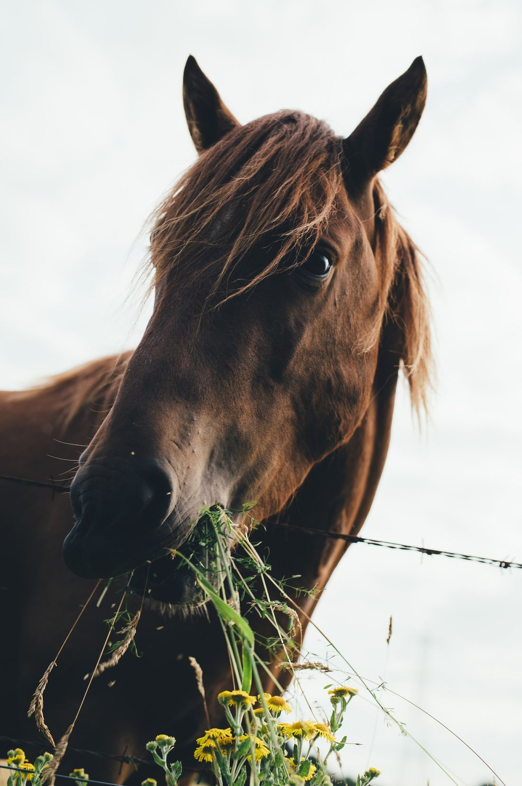
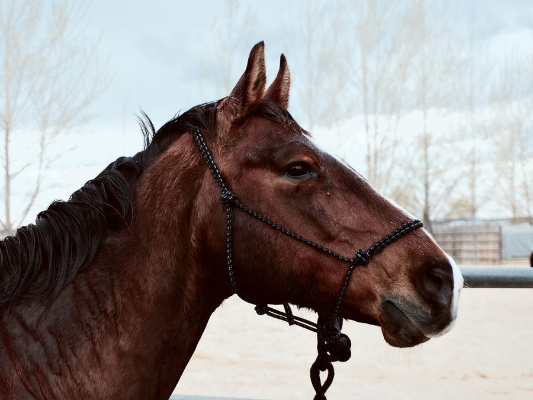
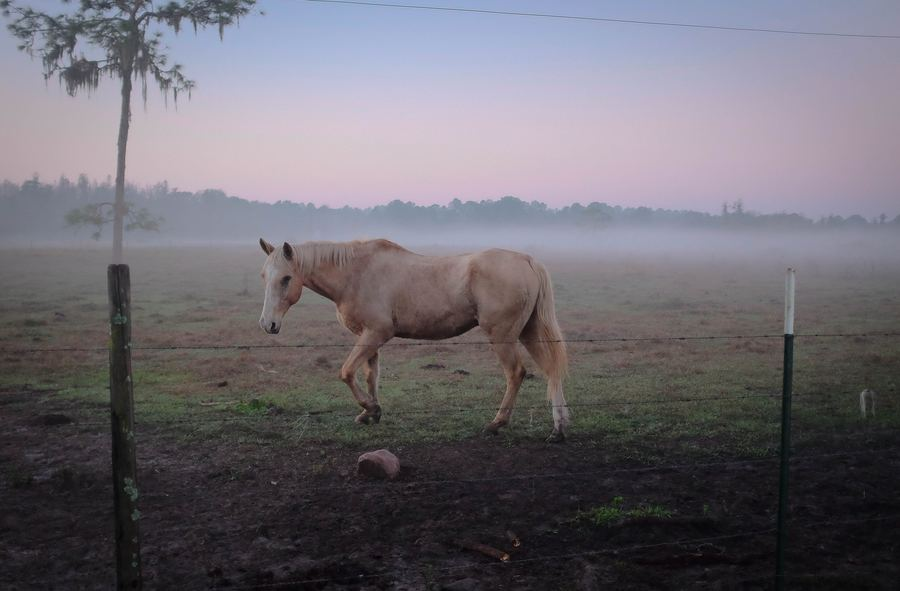

The whole horse
What is equine bodywork?
Equine bodywork is an umbrella term for hands-on therapies that address the horse’s soft tissue and structure. Muscle, fascia, and the skeleton function as a single system. When one area becomes tight or restricted, the rest of the body adapts around it, and those compensations often show up far from where the problem began.
That is why I work on the whole horse rather than a single sore spot. A short stride behind may trace back to tension through the back. A horse that resists bending may be guarding through the neck or poll. Bodywork aims to relieve these patterns so the horse can move comfortably and correctly again.

Primary technique
Positional release
Positional release is a gentle, non-forceful technique with roots in the human manual therapies known as strain-counterstrain and positional release therapy. Rather than pressing into a tight muscle, I locate an area of tension or tenderness and slowly move the horse’s body into the position where that tissue is most at ease, usually by shortening it.
Supported in that position of comfort, the muscle no longer needs to brace, and the nervous system can let the tension go. I hold the position until I feel the tissue soften, then return the body slowly to neutral.
Because it works with the horse’s comfort instead of against it, positional release is especially well suited to sensitive, anxious, or sore horses, and to areas too tender for deeper work. It also prepares the body to respond better to everything that follows in a session.
Signs of release
Horses show clearly when tension is letting go. During a session I watch for:
- Licking and chewingOften the first sign of a release.
- YawningSometimes several deep yawns in a row.
- A softer eyeThe eye relaxes and blinking slows.
- Lowering the headThe neck drops and the poll softens.
- Sighing or blowing outA long, slow exhale through the nostrils.
- Shaking or stretchingReleasing through the whole body.

Muscle
Sports massage
Equine sports massage uses a range of hands-on strokes, including effleurage, compression, kneading, and friction, to address the muscles that work hardest in the ridden and performance horse.
It is used to relieve muscle tension and spasm, encourage circulation, improve flexibility, and support recovery after training or competition. Massage also tells me a great deal: how a muscle feels under my hands often reveals where a horse is compensating, which guides the rest of the session.
Structure
Structural alignment
Structural alignment is hands-on bodywork focused on the horse’s skeletal frame and the soft tissue that supports it. When the frame is out of balance, the surrounding muscles work harder to hold it, and soreness tends to return no matter how much massage the horse receives.
Using careful positioning, controlled pressure, and the horse’s own movement, I encourage the structure back toward balance so the muscles can stay relaxed. I always prepare the area with softer work first, and I never work past what the horse is willing to accept.
A note on chiropractic
Structural alignment is a bodywork technique. It is not chiropractic care and is not a substitute for veterinary or chiropractic treatment. In Florida, animal chiropractic falls under veterinary oversight.
If your horse has a suspected fracture, joint injury, or neurological problem, please have them examined by your veterinarian before booking.
Method
Modality stacking
A modality is a single type of therapy. Modality stacking means layering several of them within one session, in the order that best serves the horse.
A horse that braces against pressure might begin with positional release. Once that guarding eases, sports massage becomes comfortable and far more effective, and structural alignment can follow on relaxed tissue. Because no two horses present the same way, no two sessions are built quite the same way.
How a session is layered
Assess
Observe the horse at rest and in motion, then palpate to find where tension, sensitivity, and imbalance are held.
Prepare
Use positional release to settle the horse and soften the areas they are guarding.
Address
Apply sports massage and structural alignment to the specific areas identified, at a depth the horse accepts.
Reassess
Return to the original findings to measure the change, and refine the work before finishing.

Horse-led
Aromatherapy
Horses have a highly developed sense of smell, and many respond strongly to scent. I use aromatherapy in a horse-led way, offering a small selection of essential oils one at a time and letting the horse show which, if any, appeal to them.
A horse may lean in, breathe the scent deeply, or begin to lick and chew. Just as often, a horse will turn away, and that is respected as a clear answer. Oils are always diluted and never forced on a horse.
Good to know
- Aromatherapy is always optional. Let me know if you would prefer I leave it out.
- Please tell me about any known allergies or sensitivities, in your horse or in you.
- If your horse competes under USEF or FEI medication rules, share your show schedule so we can plan which oils to use and when.
Bodywork complements veterinary care
In Florida, diagnosing and treating disease or injury in animals is the practice of veterinary medicine and is reserved for licensed veterinarians. My work is offered alongside your veterinarian’s care, never in place of it.
I do not diagnose or prescribe. If I find anything during a session that concerns me, I will recommend that you contact your veterinarian, and I’m always glad to coordinate with them directly.

Book a session
Ready to schedule a session?
I’m based in Eustis, Florida. Reach out to check availability for your barn and to book your horse’s first visit.